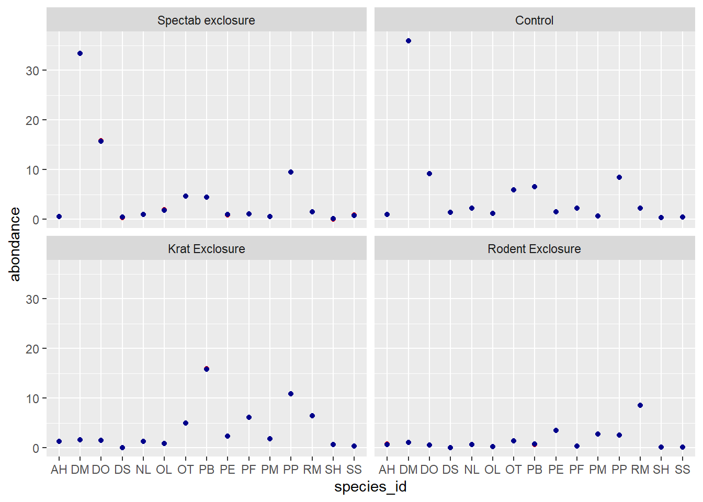
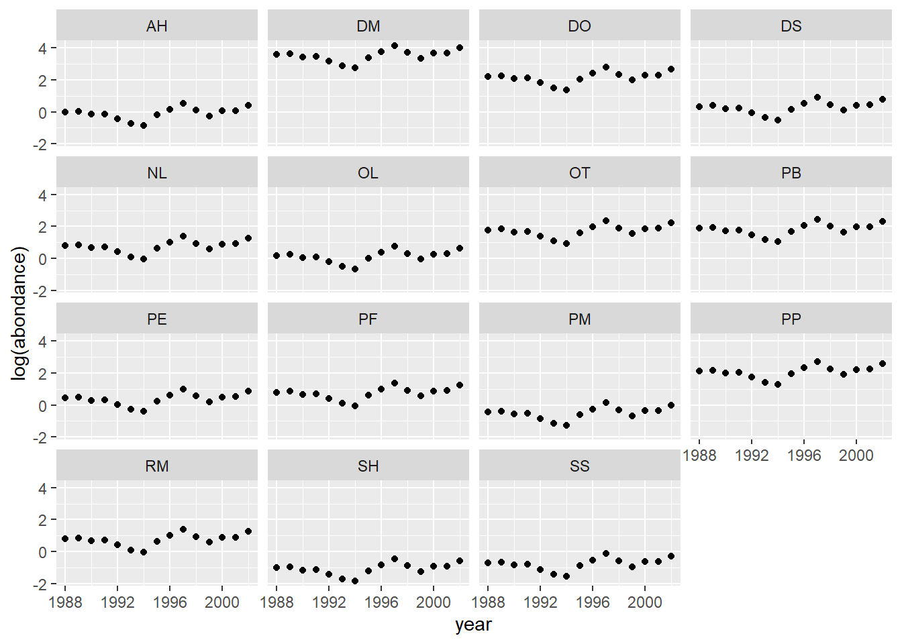

Modèles linéaires généralisés à effets mixtes - Solutions
Données
Nous utiliserons pour ce laboratoire la base de données Portal, déjà présentée lors du laboratoire 2, qui contient des données de suivi à long terme de plusieurs espèces de rongeurs sur un site d’étude en Arizona.
Ernest, M., Brown, J., Valone, T. and White, E.P. (2018) Portal Project Teaching Database. https://figshare.com/articles/Portal_Project_Teaching_Database/1314459.
Cette base de données est formée de trois tableaux de données:
- portal_surveys.csv contient les informations sur chaque individu capturé.
surveys <- read.csv("../donnees/portal_surveys.csv")
str(surveys)## 'data.frame': 35549 obs. of 9 variables:
## $ record_id : int 1 2 3 4 5 6 7 8 9 10 ...
## $ month : int 7 7 7 7 7 7 7 7 7 7 ...
## $ day : int 16 16 16 16 16 16 16 16 16 16 ...
## $ year : int 1977 1977 1977 1977 1977 1977 1977 1977 1977 1977 ...
## $ plot_id : int 2 3 2 7 3 1 2 1 1 6 ...
## $ species_id : chr "NL" "NL" "DM" "DM" ...
## $ sex : chr "M" "M" "F" "M" ...
## $ hindfoot_length: int 32 33 37 36 35 14 NA 37 34 20 ...
## $ weight : int NA NA NA NA NA NA NA NA NA NA ...- portal_species.csv indique le nom de genre, d’espèce et le groupe taxonomique correspondant à chaque code d’espèce.
species <- read.csv("../donnees/portal_species.csv")
str(species)## 'data.frame': 54 obs. of 4 variables:
## $ species_id: chr "AB" "AH" "AS" "BA" ...
## $ genus : chr "Amphispiza" "Ammospermophilus" "Ammodramus" "Baiomys" ...
## $ species : chr "bilineata" "harrisi" "savannarum" "taylori" ...
## $ taxa : chr "Bird" "Rodent" "Bird" "Rodent" ...- portal_plots.csv indique le type de traitement appliqué à chaque parcelle: “Control” = témoin; “Rodent Exclosure” = clôture pour exclure tous les rongeurs; “Long-term Krat Exclosure” ou “Short-term Krat Exclosure” = clôture avec porte pour exclure les rats-kangourous du genre Dipodomys. “Spectab exclosure” = clôture avec porte pour exclure seulement l’espèce Dipodomys spectabilis.
plots <- read.csv("../donnees/portal_plots.csv")
str(plots)## 'data.frame': 24 obs. of 2 variables:
## $ plot_id : int 1 2 3 4 5 6 7 8 9 10 ...
## $ plot_type: chr "Spectab exclosure" "Control" "Long-term Krat Exclosure" "Control" ...1. Préparation des données
- À partir du tableau
surveys, conservez les individus observés depuis 1988 qui correspondent à des rongeurs (taxa == "Rodent"dans le tableauspecies).
Réponse
Il faut joindre les tableaux surveys et species avant d’appliquer un filtre pour l’année et le groupe taxonomique.
library(dplyr)
surveys <- inner_join(surveys, species) %>%
filter(year >= 1988, taxa == "Rodent")- Choisissez les 15 espèces les plus abondantes dans le tableau de données obtenu en (a), puis comptez le nombre d’individus pour chacune de ces espèces, par année et par placette. Incluez un compte de 0 pour les placette et années où l’espèce est absente.
Réponse
- D’abord, nous comptons le nombre d’observations dans
surveyspar espèce aveccount(ce qui produit un tableau avec 2 colonnes,species_idetn), puis nous conservons les 15 plus abondantes avectop_n. Ensuitesemi_joinconserve seulement les rangées desurveysqui correspondent à une des espèces dans le top 15; contrairement àinner_join,semi_joinne rattache pas de nouvelles colonnes àsurveys.
compte_esp <- count(surveys, species_id) %>%
top_n(15, wt = n) # wt = n signifie le top 15 selon la colonne n
surveys <- semi_join(surveys, compte_esp)## Joining, by = "species_id"- Nous appliquons ensuite
countpour compter le nombre d’individus par espèce, placette et année. Finalement, nous appliquons la fonctioncompletedu packagetidyrpour ajouter les 0 dans la colonnenpour les combinaisons d’espèce, placette et année sans observation.
abond <- count(surveys, species_id, plot_id, year)
library(tidyr)
abond <- complete(abond, species_id, plot_id, year, fill = list(n = 0))
str(abond)## tibble [5,400 x 4] (S3: tbl_df/tbl/data.frame)
## $ species_id: chr [1:5400] "AH" "AH" "AH" "AH" ...
## $ plot_id : int [1:5400] 1 1 1 1 1 1 1 1 1 1 ...
## $ year : int [1:5400] 1988 1989 1990 1991 1992 1993 1994 1995 1996 1997 ...
## $ n : num [1:5400] 0 0 0 1 0 0 0 0 0 0 ...Notez que le nombre de rangées dans abond est égal au produit du nombre d’espèces, de placettes et d’années (15 x 24 x 15 = 5400).
- Recodez les deux traitements “Long-term Krat Exclosure” et “Short-term Krat Exclosure” en un seul traitement, “Krat Exclosure”, puis joignez le tableau de données
plotsau tableau obtenu en (b).
Réponse
plots$plot_type[grepl("Krat", plots$plot_type)] <- "Krat Exclosure"
abond <- inner_join(abond, plots)## Joining, by = "plot_id"str(abond)## tibble [5,400 x 5] (S3: tbl_df/tbl/data.frame)
## $ species_id: chr [1:5400] "AH" "AH" "AH" "AH" ...
## $ plot_id : int [1:5400] 1 1 1 1 1 1 1 1 1 1 ...
## $ year : int [1:5400] 1988 1989 1990 1991 1992 1993 1994 1995 1996 1997 ...
## $ n : num [1:5400] 0 0 0 1 0 0 0 0 0 0 ...
## $ plot_type : chr [1:5400] "Spectab exclosure" "Spectab exclosure" "Spectab exclosure" "Spectab exclosure" ...Note: La fonction grepl(pattern, x) retourne TRUE ou FALSE dépendamment si la variable x contient ou non le motif de texte pattern.
2. Modéliser l’abondance d’une espèce
Pour cette partie, nous nous limitons aux données de l’espèce Dipodomys ordii (DO), le rat-kangourou d’Ord.

- Visualisez la distribution du nombre d’individus de l’espèce DO en fonction du type de traitement. Quel type de modèle serait approprié pour modéliser cette relation? (Ignorez les effets des autres variables pour l’instant.) Estimez les paramètres du modèle et vérifiez si les coefficients obtenus correspondent qualitativement aux effets prévus de chaque traitement.
Réponse
abond_do <- filter(abond, species_id == "DO")
library(ggplot2)
# Voici une option avec des boîtes à moustaches
ggplot(abond_do, aes(x = plot_type, y = n)) +
geom_boxplot()
Il s’agit de données de comptage avec plusieurs zéros (surtout pour “Krat Exclosure” et “Rodent Exclosure”) et une variance qui augmente avec la moyenne, donc la régression de Poisson serait potentiellement appropriée.
do_glm <- glm(n ~ plot_type, data = abond_do, family = poisson)
summary(do_glm)##
## Call:
## glm(formula = n ~ plot_type, family = poisson, data = abond_do)
##
## Deviance Residuals:
## Min 1Q Median 3Q Max
## -5.6214 -1.7272 -1.0954 -0.3422 11.0933
##
## Coefficients:
## Estimate Std. Error z value Pr(>|z|)
## (Intercept) 2.21375 0.03018 73.355 <2e-16 ***
## plot_typeKrat Exclosure -1.81386 0.08061 -22.503 <2e-16 ***
## plot_typeRodent Exclosure -2.72458 0.13939 -19.547 <2e-16 ***
## plot_typeSpectab exclosure 0.54626 0.05496 9.939 <2e-16 ***
## ---
## Signif. codes: 0 '***' 0.001 '**' 0.01 '*' 0.05 '.' 0.1 ' ' 1
##
## (Dispersion parameter for poisson family taken to be 1)
##
## Null deviance: 4900.6 on 359 degrees of freedom
## Residual deviance: 3154.8 on 356 degrees of freedom
## AIC: 3715.1
##
## Number of Fisher Scoring iterations: 7L’effet négatif des traitement “Rodent Exclosure” et “Krat Exclosure” est attendu puisqu’il s’agit d’une espèce de rat-kangourou qui devrait être exclue par ces deux traitements. L’effet positif de “Spectab Exclosure” pourrait être dû au fait que ce traitement exclut une autre espèce de rat-kangourou qui compétitionne avec celle-ci.
- Ajoutez maintenant au modèle en (a) des effets aléatoires de la parcelle et de l’année. Laquelle de ces deux variables de groupement a-t-elle le plus grand effet sur la réponse? Expliquez comment et pourquoi les erreurs-types des effets fixes changent entre ce modèle et celui de la question précédente.
Réponse
library(lme4)## Loading required package: Matrix##
## Attaching package: 'Matrix'## The following objects are masked from 'package:tidyr':
##
## expand, pack, unpackdo_glmm <- glmer(n ~ plot_type + (1 | plot_id) + (1 | year),
data = abond_do, family = poisson)
summary(do_glmm)## Generalized linear mixed model fit by maximum likelihood (Laplace
## Approximation) [glmerMod]
## Family: poisson ( log )
## Formula: n ~ plot_type + (1 | plot_id) + (1 | year)
## Data: abond_do
##
## AIC BIC logLik deviance df.resid
## 2023.4 2046.7 -1005.7 2011.4 354
##
## Scaled residuals:
## Min 1Q Median 3Q Max
## -4.0898 -0.9805 -0.3705 0.0488 8.4756
##
## Random effects:
## Groups Name Variance Std.Dev.
## plot_id (Intercept) 2.6616 1.6314
## year (Intercept) 0.4198 0.6479
## Number of obs: 360, groups: plot_id, 24; year, 15
##
## Fixed effects:
## Estimate Std. Error z value Pr(>|z|)
## (Intercept) 1.3761 0.6072 2.266 0.02344 *
## plot_typeKrat Exclosure -2.8076 0.8561 -3.280 0.00104 **
## plot_typeRodent Exclosure -2.6221 0.9108 -2.879 0.00399 **
## plot_typeSpectab exclosure 1.0017 1.2941 0.774 0.43891
## ---
## Signif. codes: 0 '***' 0.001 '**' 0.01 '*' 0.05 '.' 0.1 ' ' 1
##
## Correlation of Fixed Effects:
## (Intr) plt_KE plt_RE
## plt_typKrtE -0.650
## plt_typRdnE -0.613 0.439
## plt_typSpce -0.433 0.305 0.288L’écart-type de la variation entre placettes (1.63) est supérieur à celui de la variance entre année (0.65).
Les erreurs-types des effets fixes sont plus grandes que celles du modèle sans effets aléatoires; cela est dû au fait que le modèle mixte tient compte du fait que les observations d’une même placette sont corrélées, ce qui confère moins de puissance statistique qu’un échantillonnage tout à fait indépendant, surtout lorsque le traitement est appliqué au niveau de la placette.
- Vérifiez si les suppositions du modèle en (b) sont respectées, en particularité la dispersion des résidus et la normalité des effets aléatoires. S’il y a surdispersion, estimez le coefficient de dispersion.
Réponse
Il y a une surdispersion significative (coefficient de 3.59).
chi2 <- sum(residuals(do_glmm, type = "pearson")^2)
1 - pchisq(chi2, df = df.residual(do_glmm))## [1] 0chi2 / df.residual(do_glmm)## [1] 3.591732Les effets aléatoires de la placette et de l’année suivent une distribution normale sauf pour quelques valeurs extrêmes.
re <- ranef(do_glmm)
qqnorm(re$plot_id$`(Intercept)`)
qqline(re$plot_id$`(Intercept)`)
qqnorm(re$year$`(Intercept)`)
qqline(re$year$`(Intercept)`)
3. Modéliser plusieurs espèces
Prenons maintenant le jeu de données complet produit dans la partie 1, soit les 15 espèces les plus abondantes.
- Utilisez un modèle sans effets aléatoires pour estimer l’abondance selon l’espèce, le type de traitement et leur interaction. Selon la description de l’expérience, pourquoi est-il important d’inclure l’interaction ici?
Réponse
L’interaction signifie que l’effet des traitements varie d’une espèce à l’autre. Il est important de la considérer, car les traitements ont été conçus pour exclure différentes espèces.
glm_sp <- glm(n ~ plot_type * species_id, data = abond, family = poisson)- Ajustez un modèle équivalent à celui en (a), sauf que l’espèce est un effet aléatoire plutôt que fixe. Nommez un avantage et un désavantage de ce choix.
Note: Si le GLMM a du mal à converger, nous pouvons spécifier l’argument control de glmer pour augmenter le nombre maximal d’itérations ou pour changer d’optimisateur. Dans ce cas-ci, changer l’optimisateur à bobyqa avec control = glmerControl(optimizer = "bobyqa") devrait régler le problème.
Réponse
En incluant un effet aléatoire de l’espèce sur l’ordonnée à l’origine et les coefficients des traitements, on obtient l’équivalent d’une interaction.
Le GLMM utilise l’information de toutes les espèces pour estimer l’effet des traitements sur chaque espèce. Cela peut être avantageux pour pallier au manque d’observations des espèces rares. Cependant, pour des espèces très différentes, il n’est peut-être pas raisonnable de supposer que leur réponse aux traitements provient de la même distribution normale.
glmm_sp <- glmer(n ~ plot_type + (1 + plot_type | species_id),
data = abond, family = poisson,
control = glmerControl(optimizer = "bobyqa"))
summary(glmm_sp)## Generalized linear mixed model fit by maximum likelihood (Laplace
## Approximation) [glmerMod]
## Family: poisson ( log )
## Formula: n ~ plot_type + (1 + plot_type | species_id)
## Data: abond
## Control: glmerControl(optimizer = "bobyqa")
##
## AIC BIC logLik deviance df.resid
## 39024.6 39116.9 -19498.3 38996.6 5386
##
## Scaled residuals:
## Min 1Q Median 3Q Max
## -5.829 -1.241 -0.792 0.137 32.183
##
## Random effects:
## Groups Name Variance Std.Dev. Corr
## species_id (Intercept) 1.4864 1.2192
## plot_typeKrat Exclosure 2.7669 1.6634 -0.31
## plot_typeRodent Exclosure 3.5819 1.8926 -0.35 0.84
## plot_typeSpectab exclosure 0.3055 0.5527 0.27 0.08 0.18
## Number of obs: 5400, groups: species_id, 15
##
## Fixed effects:
## Estimate Std. Error z value Pr(>|z|)
## (Intercept) 0.8500 0.3147 2.701 0.00692 **
## plot_typeKrat Exclosure -0.3842 0.4259 -0.902 0.36692
## plot_typeRodent Exclosure -1.3993 0.4899 -2.856 0.00428 **
## plot_typeSpectab exclosure -0.3077 0.1532 -2.009 0.04457 *
## ---
## Signif. codes: 0 '***' 0.001 '**' 0.01 '*' 0.05 '.' 0.1 ' ' 1
##
## Correlation of Fixed Effects:
## (Intr) plt_KE plt_RE
## plt_typKrtE -0.309
## plt_typRdnE -0.338 0.810
## plt_typSpce 0.242 0.079 0.168- Avec la fonction
expand.grid, créez un jeu de données pour les prédictions qui contient toutes les combinaisons de traitement et d’espèce.
pred_df <- expand.grid(plot_type = unique(abond$plot_type),
species_id = unique(abond$species_id))Calculez pour chaque combinaison l’abondance prévue selon chacun des modèles en (a) et (b), à l’aide de la fonction predict. Visualisez les valeurs attendues. Y a-t-il une contraction des estimés dans le cas du modèle mixte?
Note: Par défaut, les prédictions d’un GLM(M) sont sur l’échelle du prédicteur linéaire. Pour des prédictions sur l’échelle de la réponse, spécifiez l’argument type = "response".
Réponse
pred_df <- expand.grid(plot_type = unique(abond$plot_type),
species_id = unique(abond$species_id))
pred_df$pred_glm <- predict(glm_sp, newdata = pred_df)
pred_df$pred_glmm <- predict(glmm_sp, newdata = pred_df)
ggplot(pred_df, aes(x = species_id)) +
labs(y = "log(abondance)") +
geom_point(aes(y = pred_glm), color = "red") +
geom_point(aes(y = pred_glmm), color = "darkblue") +
facet_wrap(~ plot_type)
Sur l’échelle du prédicteur linéaire (donc le logarithme de l’abondance), on voit que les prédictions du modèle mixte (en bleu) sont contractées vers la moyenne, surtout pour les espèces plus rares DS, SH et SS. Cet effet est moins évident sur l’échelle de la réponse (graphique ci-dessous) car les deux valeurs sont près de 0.
pred_df$pred_glm <- predict(glm_sp, newdata = pred_df, type = "response")
pred_df$pred_glmm <- predict(glmm_sp, newdata = pred_df, type = "response")
ggplot(pred_df, aes(x = species_id)) +
labs(y = "abondance") +
geom_point(aes(y = pred_glm), color = "red") +
geom_point(aes(y = pred_glmm), color = "darkblue") +
facet_wrap(~ plot_type)
- Ajoutez les effets aléatoires de la placette et de l’année au modèle en (b) et vérifiez l’ajustement du modèle.
glmm_sp2 <- glmer(n ~ plot_type + (1 + plot_type | species_id) + (1 | plot_id) + (1 | year),
data = abond, family = poisson,
control = glmerControl(optimizer = "bobyqa"))Le modèle est surdispersé.
chi2 <- sum(residuals(glmm_sp2, type = "pearson")^2)
1 - pchisq(chi2, df = df.residual(glmm_sp2))## [1] 0chi2 / df.residual(glmm_sp2)## [1] 6.713591Pour ce modèle, il y a 6 effets aléatoires (placette, année, puis espèce avec chacun des 4 traitements).
re <- ranef(glmm_sp2)
par(mfrow = c(3,2))
qqnorm(re$plot_id$`(Intercept)`, main = "(1 | plot_id)")
qqline(re$plot_id$`(Intercept)`)
qqnorm(re$year$`(Intercept)`, main = "(1 | year)")
qqline(re$year$`(Intercept)`)
qqnorm(re$species_id$`(Intercept)`, main = "(1 | species_id)")
qqline(re$species_id$`(Intercept)`)
qqnorm(re$species_id$`plot_typeKrat Exclosure`, main = "(Krat Exclosure | species_id)")
qqline(re$species_id$`plot_typeKrat Exclosure`)
qqnorm(re$species_id$`plot_typeRodent Exclosure`, main = "(Rodent Exclosure | species_id)")
qqline(re$species_id$`plot_typeRodent Exclosure`)
qqnorm(re$species_id$`plot_typeSpectab exclosure`, main = "(Spectab exclosure | species_id)")
qqline(re$species_id$`plot_typeSpectab exclosure`)
- Finalement, utilisez une stratégie semblable à (c) pour obtenir des prédictions de l’abondance moyenne de chaque espèce dans les placettes témoin en fonction de l’année.
Note: Par défaut, predict tient compte de tous les effets aléatoires. Pour seulement considérer certains effets mais pas les autres, il faut spécifier l’argument re.form de predict. Par exemple, re.form = ~(1 | year) considère l’effet de l’année seulement. Pour ignorer tous les effets aléatoires dans les prédictions, écrivez re.form = ~0.
Réponse
# On prend toutes les combinaisons d'espèce et d'année
# puis on ajoute des colonnes fixes pour le traitement et la placette
pred_df2 <- expand.grid(species_id = unique(abond$species_id),
year = unique(abond$year))
pred_df2$plot_type <- "Control"
pred_df2$plot_id <- NA # pas de placette spécifiée
# Pour les prédictions, on ignore l'effet de placette
pred_df2$pred <- predict(glmm_sp2, newdata = pred_df2,
re.form = ~ (1 + plot_type | species_id) + (1 | year))
ggplot(pred_df2, aes(x = year, y = pred)) +
labs(y = "log(abondance)") +
geom_point() +
facet_wrap(~ species_id)
Note: Ici, toutes les tendances sont parallèles, car dans ce modèle, l’effet de l’année et de l’espèce sont additifs sur l’échelle de log(abondance).